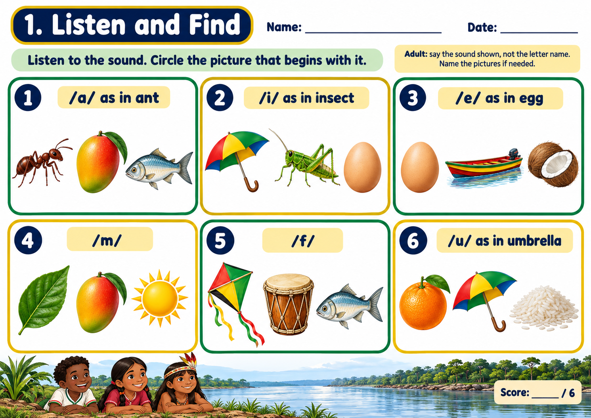
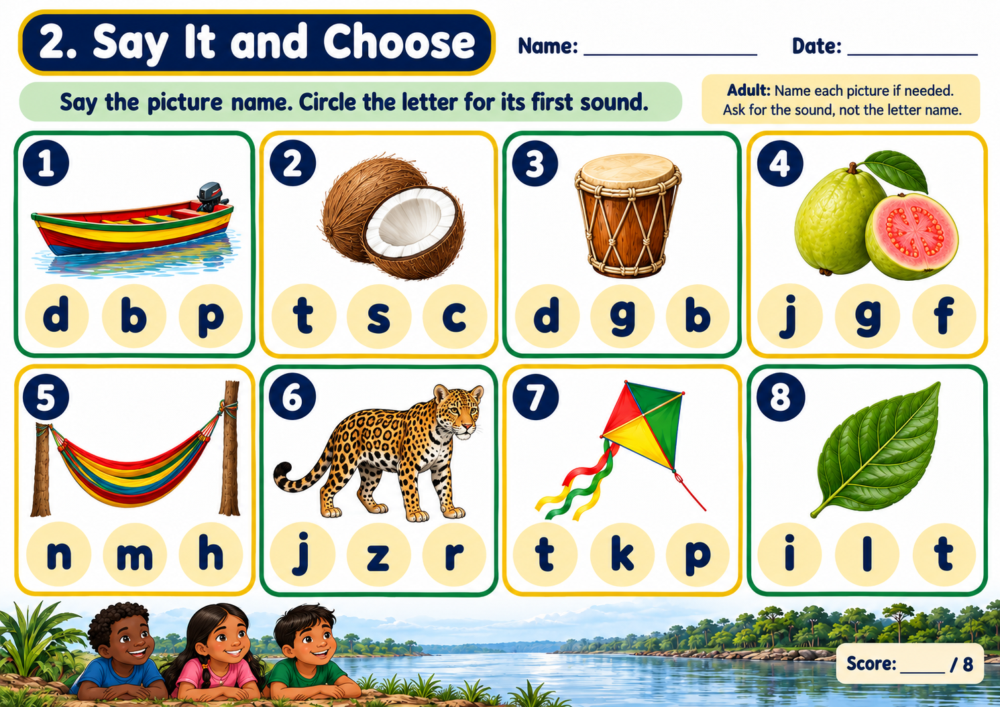
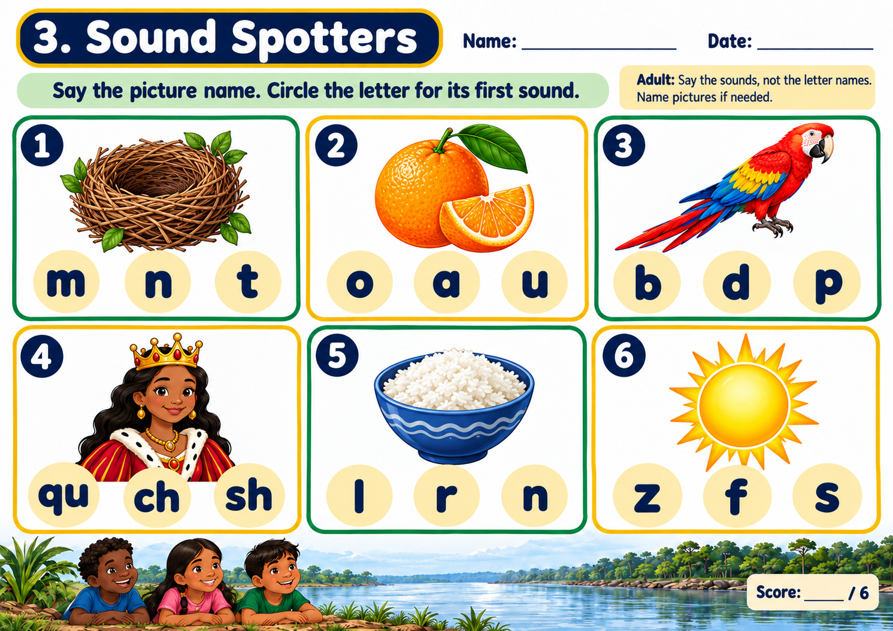
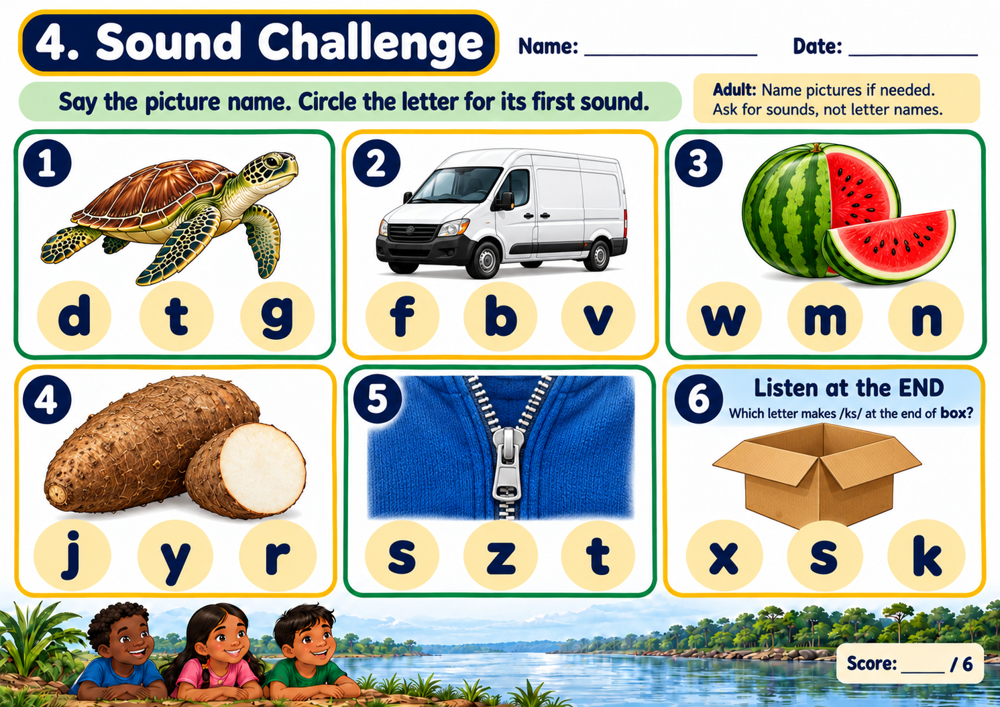

Listen
Say the word slowly and listen for the first sound.
Nurturing Brilliant Minds
Literacy Support · Letter Sounds
In this lesson, children will practise listening for alphabet letter sounds and identifying beginning sounds in words.
Step 1
Listen carefully. Say each sound aloud after the teacher or video.
Ask the child to say five letter sounds they remember. Praise effort, even if some sounds need more practice.
Step 2
A beginning sound is the first sound we hear in a word. For example, in the word sun, the first sound is /s/.
Say the word slowly and listen for the first sound.
Repeat the word and stretch the beginning sound.
Choose the picture that begins with the sound.
Say the sound and the picture word together.
Step 3
Look at each picture activity. Listen carefully to the target sound, then choose the picture or pictures that begin with that sound.

Ask: “What sound do you hear first?” Let the child point to the answer before saying the word aloud.

Say each picture word slowly. Emphasise the first sound, then let the child choose.

If the child is unsure, say two choices aloud and ask, “Do these start the same way?”

Ask the child to name one picture and say its beginning sound without help.
Step 4
Choose a letter. Say its sound three times.
Look at a picture, name it, then say the first sound you hear.
Say two words. Ask if they begin with the same sound or a different sound.
Find something nearby that begins with a sound from the video.
Sound discrimination is an important early reading skill. Some children need repeated practice hearing, saying and comparing sounds before they can blend words confidently. Keep sessions short, positive and encouraging.